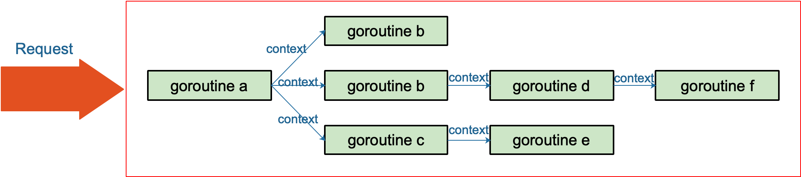

Go 常用来写后台服务，通常只需要几行代码，就可以搭建一个 http server。
在 Go 的 server 里，通常每来一个请求都会启动若干个 goroutine 同时工作：有些去数据库拿数据，有些调用下游接口获取相关数据……
这些 goroutine 需要共享这个请求的基本数据，例如登陆的 token，处理请求的最大超时时间（如果超过此值再返回数据，请求方因为超时接收不到）等等。当请求被取消或是处理时间太长，这有可能是使用者关闭了浏览器或是已经超过了请求方规定的超时时间，请求方直接放弃了这次请求结果。这时，所有正在为这个请求工作的 goroutine 需要快速退出，因为它们的“工作成果”不再被需要了。在相关联的 goroutine 都退出后，系统就可以回收相关的资源。
再多说一点，Go 语言中的 server 实际上是一个“协程模型”，也就是说一个协程处理一个请求。例如在业务的高峰期，某个下游服务的响应变慢，而当前系统的请求又没有超时控制，或者超时时间设置地过大，那么等待下游服务返回数据的协程就会越来越多。而我们知道，协程是要消耗系统资源的，后果就是协程数激增，内存占用飙涨，甚至导致服务不可用。更严重的会导致雪崩效应，整个服务对外表现为不可用，这肯定是 P0 级别的事故。这时，肯定有人要背锅了。
其实前面描述的 P0 级别事故，通过设置“允许下游最长处理时间”就可以避免。例如，给下游设置的 timeout 是 50 ms，如果超过这个值还没有接收到返回数据，就直接向客户端返回一个默认值或者错误。例如，返回商品的一个默认库存数量。注意，这里设置的超时时间和创建一个 http client 设置的读写超时时间不一样，这里不详细展开。可以去看看参考资料【Go 在今日头条的实践】一文，有很精彩的论述。
context 包就是为了解决上面所说的这些问题而开发的：在 一组 goroutine 之间传递共享的值、取消信号、deadline……

用简练一些的话来说，在Go 里，我们不能直接杀死协程，协程的关闭一般会用 channel+select 方式来控制。但是在某些场景下，例如处理一个请求衍生了很多协程，这些协程之间是相互关联的：需要共享一些全局变量、有共同的 deadline 等，而且可以同时被关闭。再用 channel+select 就会比较麻烦，这时就可以通过 context 来实现。
一句话：context 用来解决 goroutine 之间退出通知、元数据传递的功能。
【引申1】举例说明 context 在实际项目中如何使用。
context 使用起来非常方便。源码里对外提供了一个创建根节点 context 的函数：
|
|
background 是一个空的 context， 它不能被取消，没有值，也没有超时时间。
有了根节点 context，又提供了四个函数创建子节点 context：
|
|
context 会在函数传递间传递。只需要在适当的时间调用 cancel 函数向 goroutines 发出取消信号或者调用 Value 函数取出 context 中的值。
在官方博客里，对于使用 context 提出了几点建议：
- Do not store Contexts inside a struct type; instead, pass a Context explicitly to each function that needs it. The Context should be the first parameter, typically named ctx.
- Do not pass a nil Context, even if a function permits it. Pass context.TODO if you are unsure about which Context to use.
- Use context Values only for request-scoped data that transits processes and APIs, not for passing optional parameters to functions.
- The same Context may be passed to functions running in different goroutines; Contexts are safe for simultaneous use by multiple goroutines.
我翻译一下：
- 不要将 Context 塞到结构体里。直接将 Context 类型作为函数的第一参数，而且一般都命名为 ctx。
- 不要向函数传入一个 nil 的 context，如果你实在不知道传什么，标准库给你准备好了一个 context：todo。
- 不要把本应该作为函数参数的类型塞到 context 中，context 存储的应该是一些共同的数据。例如：登陆的 session、cookie 等。
- 同一个 context 可能会被传递到多个 goroutine，别担心，context 是并发安全的。
传递共享的数据 #
对于 Web 服务端开发，往往希望将一个请求处理的整个过程串起来，这就非常依赖于 Thread Local（对于 Go 可理解为单个协程所独有） 的变量，而在 Go 语言中并没有这个概念，因此需要在函数调用的时候传递 context。
|
|
运行结果：
|
|
第一次调用 process 函数时，ctx 是一个空的 context，自然取不出来 traceId。第二次，通过 WithValue 函数创建了一个 context，并赋上了 traceId 这个 key，自然就能取出来传入的 value 值。
当然，现实场景中可能是从一个 HTTP 请求中获取到的 Request-ID。所以，下面这个样例可能更适合：
|
|
取消 goroutine #
我们先来设想一个场景：打开外卖的订单页，地图上显示外卖小哥的位置，而且是每秒更新 1 次。app 端向后台发起 websocket 连接（现实中可能是轮询）请求后，后台启动一个协程，每隔 1 秒计算 1 次小哥的位置，并发送给端。如果用户退出此页面，则后台需要“取消”此过程，退出 goroutine，系统回收资源。
后端可能的实现如下：
|
|
如果需要实现“取消”功能，并且在不了解 context 功能的前提下，可能会这样做：给函数增加一个指针型的 bool 变量，在 for 语句的开始处判断 bool 变量是发由 true 变为 false，如果改变，则退出循环。
上面给出的简单做法，可以实现想要的效果，没有问题，但是并不优雅，并且一旦协程数量多了之后，并且各种嵌套，就会很麻烦。优雅的做法，自然就要用到 context。
|
|
主流程可能是这样的：
|
|
注意一个细节，WithTimeOut 函数返回的 context 和 cancelFun 是分开的。context 本身并没有取消函数，这样做的原因是取消函数只能由外层函数调用，防止子节点 context 调用取消函数，从而严格控制信息的流向：由父节点 context 流向子节点 context。
防止 goroutine 泄漏 #
前面那个例子里，goroutine 还是会自己执行完，最后返回，只不过会多浪费一些系统资源。这里改编一个“如果不用 context 取消，goroutine 就会泄漏的例子”，来自参考资料：【避免协程泄漏】。
|
|
这是一个可以生成无限整数的协程，但如果我只需要它产生的前 5 个数，那么就会发生 goroutine 泄漏：
|
|
当 n == 5 的时候，直接 break 掉。那么 gen 函数的协程就会执行无限循环，永远不会停下来。发生了 goroutine 泄漏。
用 context 改进这个例子：
|
|
增加一个 context，在 break 前调用 cancel 函数，取消 goroutine。gen 函数在接收到取消信号后，直接退出，系统回收资源。